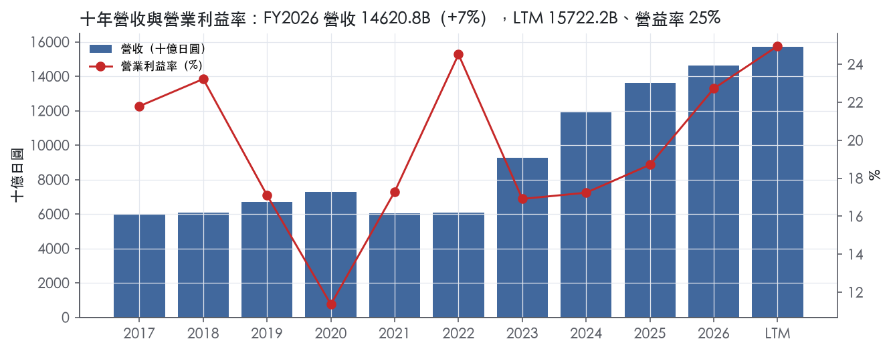
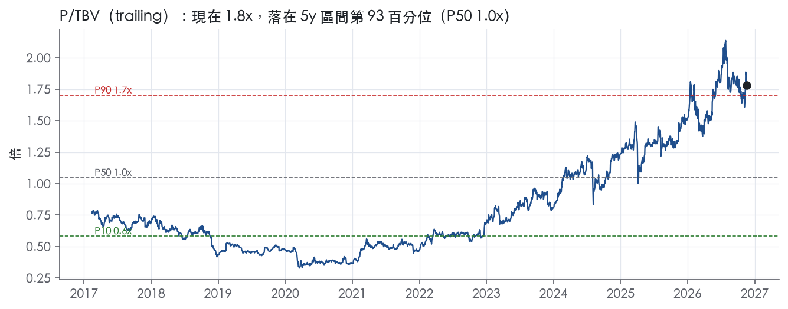
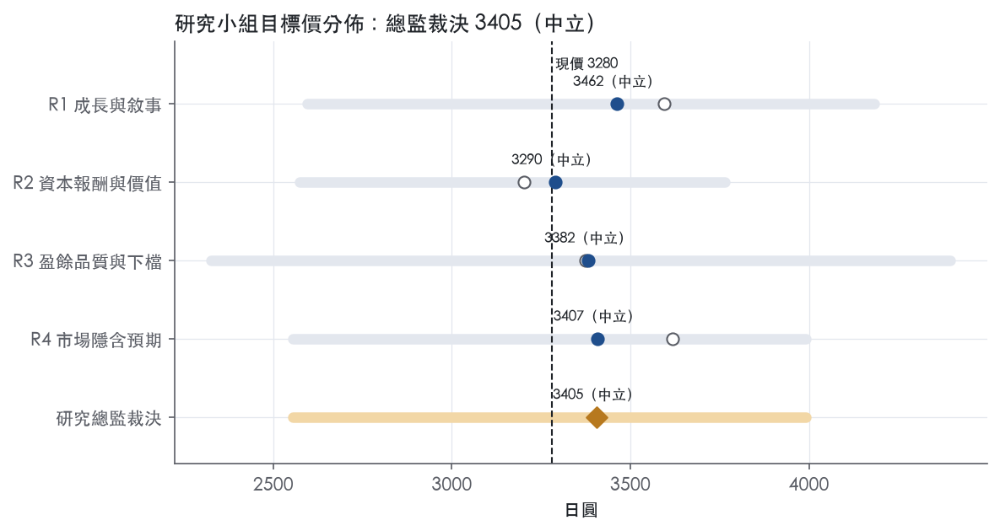

評等總表 › 未分類 › 8306.T
三菱ＵＦＪフィナンシャル・グループ（8306.T）
升息紅利已付大半，報酬貼門檻，中性｜評等 中立｜目標價 3405
評等歷史與財報快評
| 報告日 | 評等 | 目標價 | 當時股價 | 超額報酬 |
|---|---|---|---|---|
| 2026-11-17 | 中立 | 3,405 | 3,280 | -1.0% |
| 評等 | 中立 |
| 12 個月目標價 | 3405 日圓 |
| 現價 | 3280.00 日圓（2026-11-17） |
| 預期報酬 | 股價 +3.8%＋股息 3.0%＝總報酬 +6.8%；日股門檻 7.8%，超額 -1.0% |
| 估值方法 | P/TBV 1.8x，套在一年後的有形淨值 |
| 三情境 | 熊 2554／基準 3581／牛 3990 |
| 研究流程 | 四位研究員兩輪辯論＋研究總監裁決 |
| 資料來源 | EDINET、TDnet、J-Quants、Yahoo、FRED（全免費） |
目錄
第一章 結論摘要
升息紅利已付大半，報酬貼門檻，中性（研究總監裁決，四位研究員兩輪辯論後）
評等 中立｜12 個月目標價 3405 日圓（總監三情境機率加權 3416 與研究員中位數 3395 各半）｜現價 3280.00（2026-11-17）
預期報酬：股價 +3.8%＋股息 3.0%＝總報酬 +6.8%。日股門檻 7.8%，超額 -1.0%。
估值方法：P/TBV 1.8x，套在一年後的有形淨值。三情境：熊 2554（32%）／基準 3581（28%）／牛 3990（40%）。
什麼會讓研究總監改變看法：FY2027Q3 單季經常利益率 ≥26%（季節性消失）、或 2027-05 新中計加速買回且同業 P/TBV 顯示溢價收斂，轉看多；日銀 2026-12 未升息、貸倒引当金轉升超過 1,229.9B、或評価差額金跌破 1,000B，轉看空並把倍數降到 1.6x。
投資論點
- 升息紅利已付：市場已付 1.8x P/TBV，處在十年區間頂端，升息紅利多半已反映。
- 報酬低於門檻：含股息總報酬 6.8%，低於同業門檻 7.8%，不足以看多。
- 授信集中風險：利差擴大會推升不動產與金融業放款撥備，熊情境倍數回到 1.3x。
關鍵數字
| 過去四季（實際，FY2027Q2） | 未來四季 | 第 5–8 季 | 第 9–12 季 | |
|---|---|---|---|---|
| 淨營收（B） | 15,722.2B | 17,451.6B | 18,847.7B | 19,790.1B |
| 淨營收成長 | 15.1% | 11.0% | 8.0% | 5.0% |
| 稅前利益率 | 25.0% | 26.0% | 26.0% | 25.0% |
| EPS（日圓） | 243.96 | 304.84 | 332.56 | 338.60 |
| EPS 成長 | 48.2% | 25.0% | 9.1% | 1.8% |
| 每股股息（日圓） | — | 0.00 | 0.00 | 0.00 |
| ROTCE | 13.3% | 15.7% | 15.4% | 14.1% |
| 每股有形淨值（日圓） | 1842.13 | 2046.50 | 2279.58 | 2519.85 |
| P/E（現價） | 13.4x | 10.8x | 9.9x | 9.7x |
| P/TBV（現價） | 1.8x | 1.6x | 1.4x | 1.3x |
| 股息殖利率（現價） | 3.0% | — | — | — |
過去四季為申報數字；預測為研究總監的假設、程式計算。倍數與殖利率都用現價計算，用來看現價對應各期獲利的高低。
三情境
| 情境 | 機率（歷史） | 故事 | 未來四季營收成長 | 第 5–8 季稅前利益率 | 倍數 | 目標價 | 股價漲跌 |
|---|---|---|---|---|---|---|---|
| 熊 | 32%（34%） | 本行下行路徑：日銀停在 1.50%、美國利差 2.30、失業率 5.1，對應風險表第 2 條（不動産・金融業授信集中）信用成本上升、第 3 條（政策株下跌）壓縮出售益、第 4 條（業務改善命令）限制銀證手續費；倍數回 3y P50 1.3x | 5.0% | 20.0% | 1.3x | 2554 | -22.1% |
| 基準 | 28%（23%） | 日銀三步到 2.00% 後暫停，營收靠重定價、量持平，下半年季節性使 NTM 利益率 26%，出售益延續與費用、撥備對抵，OCI 小幅縮水 | 11.0% | 26.0% | 1.8x | 3581 | 9.2% |
| 牛 | 40%（43%） | 日銀升至 2.25%、春鬪逾 5% 帶動放款量回升，2027-05 新中計加速買回；日圓 145、JGB 3.40 侵蝕 OCI，倍數封頂 1y P90；y2 利益率由 R4 的 28.5% 調為 28%，因全年不應超過八季單季最高 28.6% | 14.0% | 28.0% | 1.9x | 3990 | 21.7% |
目標價由程式依研究總監的驅動與倍數計算；機率由研究總監給定。括號內是歷史頻率：把這檔股票過去十年 12 個月報酬的波動形狀，置中在基準情境，結果落在各情境附近的比例。

四位研究員用不同方法各自估值，回應研究總監的質疑後交出第二輪，最後由總監逐點裁決。各研究員的主張見第七章，裁決理由見第八章，完整論證見《研究底稿》。
| 立場（一輪→二輪） | 加權目標價（一輪→二輪） | 評等（一輪→二輪） | 第二輪倍數 | 熊～牛目標價 | |
|---|---|---|---|---|---|
| R1 成長與敘事 | 中性→中性 | 3595→3462 | 中立→中立 | 1.8x | 2596～4183 |
| R2 資本報酬與價值 | 中性→看空 | 3202→3290 | 減碼→中立 | 1.7x | 2573～3765 |
| R3 盈餘品質與下檔 | 中性→中性 | 3375→3382 | 中立→中立 | 1.7x | 2326～4396 |
| R4 市場隱含預期 | 看多→中性 | 3619→3407 | 加碼→中立 | 1.8x | 2554～3990 |
| 研究總監裁決 | 中性 | 3405 | 中立 | 1.8x | 2554～3990 |
目標價由程式依各自的驅動與倍數計算；評等＝機率加權總報酬 − 日股門檻。
第二章 業務概況
公司做什麼、賣給誰
三菱UFJ金融集團（MUFG）是日本最大的金融控股集團，以銀行業務、信託銀行業務、證券業務為核心，並涵蓋信用卡、消費金融、租賃、資產管理等業務線。集團由母公司、345家合併子公司及55家權益法適用關聯公司構成。為對應顧客多元的金融需求，公司跨越既有業態界線，建立「事業本部制」，以顧客與業務特性為軸、集團一體制定戰略並推進事業。簡單講，這是一家靠銀行放款、信託與財富管理、證券承銷交易三條腿走路的綜合金融集團，服務對象從個人零售客戶、國內外大型企業、非日系跨國企業到亞洲新興市場的商業銀行客群都有覆蓋。LTM 營收達 15,722.16B 日圓，規模遠超日本其他金融集團。
業務分部與產品
公司以顧客與業務特性劃分八大報告分部：零售數位事業本部、法人與財富管理事業本部、企業銀行事業本部、全球商業銀行事業本部、受託資產事業本部、全球CIB事業本部、市場事業本部及其他。FY2026（2025年4月至2026年3月）粗利益合計為5,991.25B日圓，其中顧客部門小計為5,665.0B日圓，市場事業本部粗利益306.9B日圓（前一年度為-339.5B日圓，由虧轉盈）。
分項來看：企業銀行事業本部（服務國內外日系大型企業）粗利益1,125.9B日圓、營業純益707.0B日圓，是獲利貢獻最大的單一分部；全球CIB事業本部（服務非日系大型企業）粗利益1,081.5B日圓、營業純益580.3B日圓，年度間成長明顯（前期營業純益460.9B日圓）；零售數位事業本部粗利益1,064.6B日圓，但營業純益僅285.9B日圓，獲利率明顯低於批發業務；法人與財富管理事業本部粗利益866.9B日圓、營業純益408.0B日圓，較前期300.0B日圓顯著成長；全球商業銀行事業本部（透過海外出資商業銀行，服務個人與中堅中小企業）粗利益904.2B日圓、營業純益387.6B日圓；受託資產事業本部（資產運用、資產管理、年金服務）粗利益621.8B日圓、營業純益152.5B日圓，規模最小但屬輕資本業務；市場事業本部負責匯率、資金、證券服務及流動性管理，FY2026營業純益為-35.5B日圓，仍處虧損但較前期-657.8B日圓大幅收斂。整體營業純益合計2,365.4B日圓，加計一般壞帳準備、信用成本、股票相關損益及權益法投資損益等調整項後，連結經常利益為3,410.2B日圓（對應之全年營收14,620.84B）。
地域別經常收益方面，日本本土6,980.6B日圓、美國2,951.8B日圓、歐洲中近東1,333.9B日圓、亞洲大洋洲2,876.8B日圓、其他地區477.7B日圓，合計14,620.8B日圓。日本本土佔比約47.8%，美國與亞洲大洋洲合計約四成，顯示海外業務已是集團不可忽視的收益來源。
設備投資方面，FY2026合計504.9B日圓，其中三菱UFJ銀行330.9B日圓、三菱UFJ信託銀行75.6B日圓、三菱UFJ證券控股24.2B日圓、消費金融子公司56.6B日圓、其他17.6B日圓，主要用於系統投資、分行改建及系統更新。
客戶、地區與通路
客戶結構以日系大型企業、非日系跨國企業、個人零售與財富管理客戶、亞洲中堅中小企業四大群體為主，分別對應企業銀行、全球CIB、零售數位／法人財富管理、全球商業銀行四個事業本部。公司在政策保有股票揭露中列出與多家日本上市公司（如豐田汽車、鈴木、大金工業等）維持金融交易關係的持股，顯示其傳統主力銀行（main bank）客戶關係仍是國內法人業務核心。海外布局上，泰國Bank of Ayudhya（持股76.88%）、印尼PT Bank Danamon（92.47%）為「Partner Bank」架構下的亞洲商業銀行平台，美國子公司MUFG Americas Holdings則承載美國本土銀行業務。通路涵蓋實體分行、遠端客服與數位管道三者並行，零售數位事業本部的定位即是「透過實體、遠端、數位對個人及法人提供金融服務」。
最近四季發生了什麼
FY2026Q3（2025年12月）營收3,750.03B日圓，年增9.7%，營益率20.3%（對應之期別資料）。FY2026Q4（2026年3月，期末季）營收3,977.04B日圓，年增18.6%，營益率回升至22.7%，淨利613.72B日圓，每股盈餘54.02日圓。FY2027Q1（2026年6月）營收3,907.54B日圓，年增20.1%，營益率擴大至28.6%，淨利809.43B日圓，每股盈餘71.59日圓，為近八季最高獲利率的一季。FY2027Q2（2026年9月，最新一季）營收4,087.55B日圓，年增12.3%，營益率28.0%，淨利821.47B日圓，每股盈餘72.81日圓，創近八季新高。
對照最新半年報，FY2027上半年（2026年4月至9月）經常收益7,995.1B日圓，較去年同期6,893.8B日圓成長，經常利益2,261.0B日圓（去年同期1,746.7B日圓），歸屬母公司股東中間純利益1,630.9B日圓（去年同期1,293.0B日圓）。資金運用收益因日銀升息與美日利差環境上升至4,748.5B日圓（去年同期4,183.7B日圓），其中貸出金利息2,299.6B日圓、有價證券利息配息1,111.4B日圓均明顯增加。股東權益（股主資本合計）由期初17,357.8B日圓增至18,320.2B日圓，淨資產合計達24,273.2B日圓。公司在最新決算短信中未揭露新一期全年業績預想數字。
連續四季營收年增率維持雙位數，獲利率從FY2025Q4低點7.4%一路攀升至FY2027Q2的28.0%，顯示資金運用收益擴大與信用成本控制同時發揮作用。
公司自己說的成長引擎與策略
公司將本次中期經營計畫定位為「取得成長的三年」，以「成長戰略的進化」、「社會課題的解決」、「企業變革的加速」三大支柱推進。成長戰略下的七項主要戰略包括：強化國內零售顧客基盤以追求顧客終身價值最大化；透過法人與財富管理雙向切入強化承繼業務；推進全球CIB與市場事業本部一體化的高資本效率商業模式；深化與Partner Bank的連動以掌握亞洲第二母國市場成長；貢獻日本「資產運用立國」目標；以GX（綠色轉型）為起點支援客戶價值鏈；並挑戰建構新事業組合以創造高成長、高收益的投資組合。公司設定2026年度（中期計畫最終年度）財務目標與中長期ROE目標，前提假設為日本政策利率約1%、美國聯邦基金利率3%中段、日經指數（2026年度末）5萬點中段、日圓兌日圓（2026年度末）150日圓前段。資本政策上，公司持續削減政策保有股票，FY2025出售約166.0B日圓（原始取得成本基礎），使政策保有股票時價餘額佔合併淨資產比率降至18.0%，低於20%門檻，2024至2026三年計畫目標為出售700.0B日圓並維持該比率低於20%。
公司預測實際獲利能力已明顯超越期初保守基調，FY2027上半年獲利進度與連續四季擴張的營益率顯示全年可能再度超越公司原先隱含的目標區間，而最新一期決算短信未更新全年預想數字，意味管理層傾向在利率與股市假設不確定性升高下延後修正公告。日銀升息路徑與美日利差收斂是觀察本行資金運用收益能否持續擴張的關鍵變數，政策保有股票的持續去化將逐步釋放資本供庫藏股與股東回報運用。整體而言，MUFG是一家受惠於日本升息循環、同時透過亞洲Partner Bank網路與全球CIB業務分散日本本土成長限制的大型綜合金融集團。

第三章 經濟護城河
結論：無，趨勢變寬
MUFG 評為「無」護城河：過去九年只有一年 ROE 高於資本成本，我們沒有把握未來 5 年都能維持在資本成本之上。趨勢判為變寬：日圓升息、政策保有股處分與海外 CIB 擴張，把 ROE 推到十年最高的 11.3%，首度越過 10.2% 的資本成本代理值。如果利率正常化後 ROE 連續 3 年站穩資本成本之上，我們會上修為窄。
優勢來源
轉換成本是 MUFG 最站得住的優勢，具體形式是日系大企業的主力銀行關係。公司用總合交易 RORA 檢驗政策保有對象，合計約為目標值的 1.7 倍，以家數計有 83% 的客戶高於目標。服務國內外日系大企業的企業銀行事業本部，FY2026 營業純益 706.96B 日圓，是最大的單一分部。這類客戶的存放款、匯兌與證券業務集中在同一家銀行，更換往來銀行的成本高。
無形資產指的是銀行、信託、證券的牌照網路，以及海外控股銀行。集團由 345 家合併子公司與 55 家權益法關聯公司組成。集團持有泰國 Bank of Ayudhya 76.88%、印尼 PT Bank Danamon 92.47%、Morgan Stanley 23.87%。新進者很難在短期內複製跨國牌照與控股網路。
效率規模出現在託管業務。MUFG 持有日本 Master Trust 信託銀行 46.50%。該行信託帳戶持有 MUFG 自身 15.58% 的股份，是第一大股東。這顯示其託管規模足以支撐少數業者分食的市場結構。
成本優勢（低成本存款）在材料中沒有存款成本證據，因此不列。
數字上看得到嗎
數字不支持護城河，這是評級給「無」的主因。ROE 十年平均 6.9%、最低 3.3%，十年平均減資本成本為 -3.3%，有資料的 9 年中只有 1 年高於資本成本。
ROE 標準差 2.3%，稅前利益率十年平均 19.1%、標準差 3.8%。換句話說，穩定的是平庸的報酬，不是超額報酬。主力銀行關係確實存在，但長年零利率把它的經濟價值壓到資本成本以下。這就是優勢來源和數字衝突的地方，我們以數字為準下修評級。
資料包的 ROIC 欄為負值，原因是存款被當成負債處理，這個指標對銀行沒有判讀意義，所以我們改用 ROE。代理值是 10 年債加 5%；若改用日本 10 年債 2.841%，門檻會下降，但十年平均 ROE 仍低於門檻，結論不變。
近期獲利也不全來自本業。FY2026 經常利益 3,410.19B 日圓中，股票等相關損益 486.05B 日圓，權益法投資損益 845.55B 日圓。股票相關損益與政策保有股出售有關，不具持續性。
什麼會侵蝕它
最大的侵蝕來源，是公司正在主動拆除主力銀行關係的黏著劑。2025 年度售出約 166.0B 日圓政策保有股，2024 至 2026 年度三年目標是售出 700B 日圓。交叉持股退場後，日系大企業選擇往來銀行會更看價格，企業銀行利差會受壓。
利率週期反轉是第二個風險。中期計畫的前提是本邦政策利率約 1%。日銀若停止升息或轉向降息，資金收益的擴張會回吐。
市場部門的波動是第三個風險。市場事業本部營業純益由 -657.84B 日圓收斂到 -35.45B 日圓。單一部門的波動就足以吞掉顧客部門大量獲利。
信用成本與數位競爭是第四個風險。FY2026 信用相關費用 474.75B 日圓。零售數位事業本部粗利益 1,064.64B 日圓，營業純益只有 285.88B 日圓。零售端已經沒有定價權，數位新進者會進一步壓縮。
對估值的含意
目標倍數相對國內大型銀行同業應持平、不給溢價：ROE 只有一年越過資本成本，超額報酬的持續性缺乏證據。P/TBV 1.8x 已在五年 93.4% 分位，P/E 13.4x 接近五年中位數 13.6x（資料包倍數帶），市場已經計入升息紅利。終值假設應讓 ROE 回歸資本成本附近，不要外推 11.3%；ROE 連續站穩資本成本之上之前，倍數沒有重估的理由。
量化底稿：報酬率與利潤率的水準與穩定度
| 指標 | 最新 | 十年平均 | 標準差 | 最低 | 最高 |
|---|---|---|---|---|---|
| ROE | 11.3% | 6.9% | 2.3% | 3.3% | 11.3% |
| 稅前利益率 | 22.7% | 19.1% | 3.8% | 11.4% | 24.5% |
| 淨營收成長 | 7.3% | 11.9% | 18.5% | -17.5% | 52.8% |
程式計算。資本成本代理值（10 年債＋5%）：10.2%；ROE 十年平均減資本成本：-3.3%；ROE 有資料的 9 年中，高於資本成本 1 年。
第四章 財務體質與盈餘品質
結論：中品質，GAAP淨利成長紮實但現金流被資產負債表擴張吃掉，須看懂銀行業CFO口徑才能判斷
FY2026 GAAP稀釋EPS 212.33、淨利2,427.23B（資料包年度表），年增率約30%，獲利成長主要來自資金利益、手數料與股票相關損益的正常業務擴張而非一次性灌水。但同年CFO為-23,064.42B、FCF為-23,737.56B（資料包年度表），LTM現金轉換遠低於1，這不是舉債度日的警訊，而是銀行放款與存款規模同步擴張、以及有價證券與衍生品部位變動灌入營業活動現金流的結構性特徵。股東回饋比率（股利＋回購）／淨利 LTM僅48.8%、三年與十年平均都在53%–54%之間，屬黃燈但可解釋【量化底稿】。整體判定為中品質：不是現金長期跟不上盈餘的「低品質」案例，但銀行業CFO口徑特殊，估值時不能直接套用一般企業的現金流品質框架。
現金有沒有跟上盈餘
LTM現金轉換（CFO／淨利）是負的，但這是銀行資產負債表機制造成的，不是盈餘灌水。FY2026營業活動現金流為-23,064.4B的支出，較前期多支出23,070.8B，主因是拆款等的減少與借用金（不含次順位借款）的減少。這句話說明CFO惡化主要來自資金調度工具（拆款、借用金）的餘額變動，屬於銀行資產負債表管理的正常波動，不是客戶收不到現金或應收帳款堆積。投資活動現金流為4,473.9B的收入，較前期增加收入4,660.9B，主要是有價證券出售收入增加，顯示公司在調整證券組合，非被迫變現求生。財務活動現金流為-1,149.8B的支出，較前期多支出288.7B，主因是股利支付增加，這點是正面訊號，代表股東回饋持續擴大而非收縮。現金及約當現金期末餘額90,045.5B，較前期末減少19,049.9B，減幅主要被投資與回饋活動消化，資產總額同期反而增加18,618.0B（資產部合計431,731.5B），可見資金是流向放款與證券投資而非流失。中間期（FY2027H1）現金預け金已從90,045.5B降至76,261.6B，續降但貸出金同期微增至133,960.7B，與年度趨勢一致，屬於銀行正常的資產配置行為而非流動性惡化。
公司調整了什麼（GAAP與非GAAP的差距）
本份決算短信摘要頁未揭露全年業績予想數字，公司也未在本次材料中提供非GAAP調整後盈餘指標，因此沒有「非GAAP吃回成本」的灰色地帶可評估。但損益表內部存在幾項需要拆解的「一次性反動」項目，分析師應視為真實波動而非品質瑕疵：其他業務收支因前年債券組合重整認列賣出損失的反動而增加820.5B，這是去年一次性虧損沖銷、今年回到正常水準，不應視為本年盈餘品質提升的核心動能。股式等關係損益因前年政策保有股大額出售獲利的反動而減少106.5B（4,860億円→486.0B），同樣是去年的一次性獲利基期墊高，今年回落屬正常。信用成本（与信関係費用総額）因前年度海外大額備抵呆帳回沖的反動而增加247.1B，來到355.8B，這是信用成本正常化，而非新增的資產品質惡化訊號——不良債權比率同期反而下降至0.96%。持分法投資損益因Morgan Stanley業績走強而增加248.5B，達845.5B，這是真實的權益法收益，應計入核心盈餘品質評估，但同時提高了對單一關聯企業的盈餘依賴度。
資產負債表與資本配置
資本充足率下滑但仍遠高於法定門檻，主因是風險資產增加而非資本流失。連結總自己資本比率降至16.85%、Tier1比率14.95%、CET1比率12.47%，較前期末各下降1.98、1.69、1.71個百分點，而CET1資本金額其實微降至15,002.2B（150,022億円），風險資產則大增至120,281.7B（1,202,817億円），較前期增加13,351.2B。這代表資本比率下滑是業務擴張（含海外併購）拉高風險資產基數所致，不是資本被侵蝕。股東權益方面，純資産部合計增至23,744.1B，較前期末增加2,016.0B，主要是利益剰余金增加1,304.7B與其他包括利益累計額增加656.2B。股利支付方面，FY2027中間期股利剰余金配当達576.8B，較去年同期的449.7B增加28%，庫藏股買回則從去年同期的250.4B降至100.0B，顯示公司把更多股東回饋資源轉向股利而非回購，這呼應東證要求提升資本成本意識下的股東回報調整。稀釋股數年變動LTM為-0.1%，近三年平均-2.5%、十年平均-1.9%，均為綠燈，代表長期庫藏股消滅確實在持續減少股數【量化底稿】。
紅旗逐條說明
SBC／營收無數據（燈號—）：銀行業股權薰酬揭露方式與一般企業不同，資料包未能拆出對應營收比率的SBC金額。這是資料口徑缺口，不是真正的紅旗，日本大型銀行的股權激勵占營收比重向來極小，不足以影響盈餘品質判斷。
（股利＋回饋）／淨利 LTM 48.8%為黃燈：規則門檻是≥50%綠、<0%紅，LTM略低於50%門檻觸發黃燈，但近三年平均54.3%、十年平均53.4%皆站上綠燈門檻【量化底稿】。這代表LTM的回饋比率被淨利基期墊高（FY2026淨利年增逾30%）稀釋所致，屬分母效應而非股東回饋政策轉弱。中間期股利實際金額較去年同期成長28%，可佐證回饋力度並未減弱，判定為假警報。
CFO/FCF深度負值：如前節所述，這是銀行資產負債表擴張（放款、存款、拆款、有價證券餘額變動）灌入營業活動現金流所致，不是客戶應收帳款惡化或盈餘品質造假。信用成本正常化（355.8B）也已反映在經常利益數字中，沒有被隱藏在表外。
對估值的含意
估值應以GAAP淨利2,427.23B為基礎，不需額外打折，因為本年成長動能（資金利益、手數料、Morgan Stanley權益法收益）具延續性，一次性項目（去年債券重整損失反動、去年政策保有股獲利反動、去年信用成本回冲反動）方向一致都是「去年基期干擾、今年回歸正常」，相互抵銷後盈餘品質中性。槓桿本身（銀行業資本比率16.85%）不構成額外估值折價的理由，但風險資產快速擴張（+13,351.2B）值得在成長性假設中反映為資本消耗加速，可能限制未來股東回饋加碼的空間。CFO/FCF負值不應套用一般企業的自由現金流估值框架，估值仍應以P/E與P/TBV為主要錨點（現價P/E 13.4x、P/TBV 1.8x，資料包快照），不建議因現金流數字而額外折價盈餘。
量化底稿：盈餘品質計分表
| 項目 | LTM | 近三年 | 十年 | 燈號 | 規則 |
|---|---|---|---|---|---|
| SBC／營收 | — | — | — | — | ≤3.0% 綠、>8.0% 紅 |
| 稀釋股數年變動 | -0.1% | -2.5% | -1.9% | 綠 | ≤0.0% 綠、>3.0% 紅 |
| （股利＋回購）／淨利 | 48.8% | 54.3% | 53.4% | 黃 | ≥50.0% 綠、<0.0% 紅 |
程式計算；燈號以 LTM（無則近三年平均）判定。銀行的現金流、淨負債、利息保障是本業，不列入。
第五章 主要風險
結論：最大的風險是全球利率上升侵蝕債券評價與資本緩衝，疊加特定業種信用集中度，兩者同時惡化時會直接壓縮自己資本比率與每股盈餘。
五大風險表
| 風險 | 觸發指標（看什麼數字、在哪裡看） | 對 EPS 的影響方向與粗略幅度 | 未來 12 個月發生機率（高／中／低） | 出處 |
|---|---|---|---|---|
| 資本余力低下／債券評價損（全球金利上升） | 其他有価証券評価差額金（短信中間連結貸借対照表）：FY2026/3期末1,672.1B→2026/9期末1,448.7B，半年已減少223.4B；另看10年期JGB利率（現行2.841）與美國10年期公債利率（現行5.15） | 方向：負向；若評價損擴大並轉為實現損失或減損，直接侵蝕經常利益與資本比率，幅度中～大 | 高 | |
| 与信費用增加（業種集中：不動産・金融業） | 連結貸倒引当金餘額（短信BS）：FY2026/3期末1,229.9B→2026/9期末1,159.4B，呈下降趨勢；若轉為上升即為訊號 | 方向：負向；与信関係費用每增加即直接扣減經常利益，幅度中 | 中 | |
| 政策保有股式股價下跌 | 政策保有股式時價合計與簿價差（有報股式保有狀況揭露，2026年3月末基準）：時價合計約3,700B、簿價約1,000B；觀察日經指數水位 | 方向：負向；股價下跌造成減損或評價損擴大，並透過自己資本比率計算中的含み益／損間接壓縮資本緩衝，幅度中 | 中 | |
| 不公正・不適切な取引に伴う行政処分 | 金融庁對三菱UFJ銀行與三菱UFJ摩根士丹利証券等發出之業務改善命令執行進度公告、是否有新的制裁金或和解金支付公告 | 方向：負向；一次性支出與聲譽損失，幅度中（已有銀證聯合不當資訊共享案2024/6/24命令及匯款業務制裁金合意，但具體金額未在原文揭露） | 中高 | |
| 格下げ・外貨流動性風險 | 信用評等機構對本公司及三大主要子公司（三菱UFJ銀行、三菱UFJ信託銀行、三菱UFJ証券控股）之評等公告；若全部降1級，衍生性商品追加擔保約23.8B，若降2級約149.4B（2026年3月末基準） | 方向：負向；調達成本上升、擔保追加，幅度小～中（屬尾端風險） | 低 |
逐條說明
第一條：資本余力低下／債券評價損是公司自己在2026年3月風險委員會列為最主要的頂級風險（トップリスク）。公司持有大量日本國債與海外債券，若全球金利進一步上升，持有債券產生評價損或被迫出售造成實現損失，進而壓縮自己資本比率與經常利益。這個風險目前已經在發生：其他有価証券評価差額金半年內從1,672.1B降至1,448.7B，而目前美國10年期公債利率已達5.15、日本10年期公債利率達2.841（／），利率環境並未反轉，這條風險的觸發機率判定為高。
第二條：与信費用增加，公司自承不動産業種及金融業種向け與信相對集中，業績惡化時信用成本會超出預期。目前連結貸倒引当金餘額呈下降趨勢（FY2026/3期末1,229.9B→2026/9期末1,159.4B），顯示信用品質尚屬穩定，但這正是觀察指標轉向的起點，一旦趨勢反轉即代表實體經濟惡化已傳導至資產負債表。機率判定為中，因為目前趨勢向好，但業種集中這個結構性弱點並未改變。
第三條：政策保有股式股價下跌，公司持有市場性股票（含政策保有股）2026年3月末時價合計約3,700B、簿價約1,000B，帳上存在約2,700B的未實現利益緩衝，但公司明確揭露自己資本計算有納入保有股票的含み損益，股價下跌會直接造成自己資本比率下降。公司雖持續去化政策保有股票（FY2025出售約166.0B，原始取得成本基礎），但去化速度尚未消除這塊暴露，機率判定為中。
第四條：不公正・不適切な取引に伴う行政処分，這不是假設性風險，而是已經發生且仍在處理中的事項。2024年6月24日金融庁對三菱UFJ銀行及三菱UFJ摩根士丹利証券發出業務改善命令，原因是銀證聯合業務中不當共享客戶資訊及違反登記金融機構禁止從事有價証券相關業務之規定；另外行員從貸金庫竊取客戶資產事件，銀行於2025年1月16日提交再發防止策報告。公司也揭露在匯款業務相關問題上已與部分當局達成制裁金支付合意，且目前仍是多起民事訴訟的被告之一。這類事項通常轉化為罰金、業務改善命令執行成本與聲譽損失，機率判定為中高，因為既有案件仍在進行中，新的處分或和解隨時可能追加。
第五條：格下げ・外貨流動性風險，公司揭露若自身及三大主要子公司評等全部被降1級，衍生性商品需追加擔保約23.8B，降2級則約149.4B（2026年3月末基準）。這屬於尾端風險，正常情境下發生機率低，但若伴隨全球金融市場混亂同時發生，影響會迅速放大，因此列入五大風險作為情境測試的下檔指標。
公司沒寫、但我們認為該注意的
第一，日銀升息路徑放緩或反轉的風險。公司中期經營計畫財務目標的前提假設是日本政策利率約1%、美國聯邦基金利率3%中段，而最近四季資金運用收益擴大正是靠這個升息環境驅動（FY2027上半年資金運用收益4,748.5B，較去年同期4,183.7B成長，其中貸出金利息2,299.6B、有價証券利息配息1,111.4B皆明顯增加）。若日銀升息步調不如預期，目前連續四季擴張的營益率（FY2026Q4 22.7%→FY2027Q2 28.0%）可能無法延續，但公司原文並未單獨揭露這個敏感度。
第二，日圓兌日圓大幅回落對海外子公司換算收益的衝擊。公司美國、亞太地區經常收益合計占全集團比重接近四成（美國2,951.8B、亞太2,876.8B，合計占14,620.8B約四成），中期計畫假設2026年度末日圓兌日圓為150日圓前段，而現行匯率為159.93，已高於公司假設；若日圓走弱使實際匯率回落至假設水準甚至更低，海外子公司折算為日圓的收益將縮水，但公司並未單獨量化此匯率敏感度對EPS的影響。
第六章 市場在定價什麼
現價 3280.00 對應 trailing（過去四季）P/E 13.4x、P/TBV 1.8x（ROTCE 13.3%）、股息殖利率 3.0%。主要估值倍數 P/TBV 現在 1.8x，落在5 年區間第 93 百分位（P10／P50／P90 = 0.6x／1.0x／1.7x）。

把程式的機械基準預測放到現價下，市場付的前瞻倍數是：P/TBV（未來四季） 1.6x、P/E（未來四季） 10.9x、P/TBV（第 5–8 季） 1.4x、P/E（第 5–8 季） 9.9x。
| 倍數 | 現在 | 5 年 P10 | 5 年 P50 | 5 年 P90 | 現在分位 | 全期 P50 |
|---|---|---|---|---|---|---|
| P/E | 13.4x | 7.9x | 13.6x | 19.8x | 49.3% | 10.2x |
| P/TBV | 1.8x | 0.6x | 1.0x | 1.7x | 93.4% | 0.7x |
trailing 倍數（股價 ÷ 過去四季）；分位以每個交易日計算。
（日股同業籃尚未建置：評等門檻用日股絕對門檻＝日本 10 年公債＋股權風險溢酬 5%，見首頁。）
程式的機械基準（成長率從過去四季年增率三年收斂到 6%、利潤率持平）用 P/TBV 5 年 P50（trailing） 估值得到 2146（-34.6%），用現行倍數得到 3653。這兩個數字只是參考點，不是本報告的目標價；研究員對這個定價的回應在第七章。
第七章 四位研究員的看法
下表是每位研究員第一輪（各自獨立）與第二輪（回應研究總監的質疑後）的結果。目標價全由程式依各自的假設計算。
| 立場（一輪→二輪） | 加權目標價（一輪→二輪） | 評等（一輪→二輪） | 第二輪倍數 | 熊～牛目標價 | |
|---|---|---|---|---|---|
| R1 成長與敘事 | 中性→中性 | 3595→3462 | 中立→中立 | 1.8x | 2596～4183 |
| R2 資本報酬與價值 | 中性→看空 | 3202→3290 | 減碼→中立 | 1.7x | 2573～3765 |
| R3 盈餘品質與下檔 | 中性→中性 | 3375→3382 | 中立→中立 | 1.7x | 2326～4396 |
| R4 市場隱含預期 | 看多→中性 | 3619→3407 | 加碼→中立 | 1.8x | 2554～3990 |
| 研究總監裁決 | 中性 | 3405 | 中立 | 1.8x | 2554～3990 |
目標價由程式依各自的驅動與倍數計算；評等＝機率加權總報酬 − 日股門檻。
分歧度：第一輪 加權目標價 3202～3619（區間＝現價的 13%）· 倍數 1.6～1.8x · 立場 中性×3、看多×1；第二輪 加權目標價 3290～3462（區間＝現價的 5%）· 倍數 1.7～1.8x · 立場 中性×3、看空×1。

| 研究員 | 第二輪主張 | 堅持的理由 |
|---|---|---|
| R1 成長與敘事 | 中性，基準 1.8x P/TBV，現行倍數一年後持平。 | 熊情境機率 34% 高於牛 28%：放款量未成長，起點倍數已高。 |
| R2 資本報酬與價值 | 偏空，基準 1.7x P/TBV，即過去一年市場付的中位數。 | 基準情境加股息仍低於 7.8% 門檻，不給合理值 2.4x 的溢價。 |
| R3 盈餘品質與下檔 | 中性，基準 1.7x P/TBV，低於現行 1.8x。 | 持股出售益與摩根士丹利收益逐年遞減，後段稅前利益率降到 24%。 |
| R4 市場隱含預期 | 中性，基準 1.75x P/TBV，因模型有形淨值未扣評價損益。 | 存款定價落後是結構性的，後段稅前利益率可維持 27%。 |
每位研究員的逐條回應與完整論證見《研究底稿》（8306.T_研究底稿_2026-11-16.docx）。
第八章 研究總監裁決
分歧登記
| 分歧點 | R1 | R2 | R3 | R4 | 什麼資料會分出勝負 |
|---|---|---|---|---|---|
| NTM 稅前利益率（op_margin_y1） | 26% | 26% | 25%（沿機械） | 26%（第一輪 27%） | FY2027Q3 短信（2027-02）：單季經常利益率 ≥23% 支持 26%，≤21% 支持 25% 以下 |
| Q5–Q8 稅前利益率（op_margin_y2） | 26% | 26% | 24.5%（出售益、MS 遞減） | 27%（利差紅利全保留） | FY2028Q1 短信（2027-08）：預金利息增幅是否追上貸出金利息；股式等關係損益是否維持 FY2026 的 486.05B 量級 |
| Q5–Q8 營收成長（rev_growth_y2） | 7% | 8% | 7% | 10% | 2027-03 期末貸出金是否突破 133,960.7B；日銀 2027-06 是否如期到 2.00% |
| 基準倍數（P/TBV@NTM） | 1.8x（現行持平） | 1.7x（1y P50） | 1.7x（OCI＋買回降速） | 1.75x（持平、折 OCI 口徑） | 2027-03 期末その他の包括利益累計額合計相對 4,480.6B 的縮水幅度 |
| 熊情境深度與牛熊機率順序 | 1.3x、熊 34%＞牛 28% | 1.3x、牛 38%＞熊 33% | 1.2x、熊 30%＞牛 28% | 1.3x、牛 40%＞熊 33% | FY2027Q3 貸倒引当金是否由 1,159.4B 轉升；金融庁是否追加處分 |
逐點裁決
1. NTM 稅前利益率：選 26%（R1／R2／R4）。 R3 的 25% 等於主張下半年只能複製去年同期的 20.3%、22.7%，忽略日銀在 NTM 期間內會升息兩次（2026-12 到 1.50%、2027-03 到 1.75%，本行日本前提）。上半年貸出金利息 2,299.6B 對去年同期 1,995.9B，預金利息 1,130.0B 對 1,006.6B，放款重定價快於存款，這個差距在下半年不會逆轉。R4 第一輪的 27% 等於假設季節性消失，他已依 E3 退回。本研究部預測紀錄顯示所有來源的營業利益誤差中位數都是負值（機械 -4.4%、R3 -3.3%），系統性偏低，裁決應往上修，這也是不取 25% 的理由。
2. Q5–Q8 稅前利益率：選 26%（R1／R2）。 R3 的 24.5% 建立在股票等相關損益與 Morgan Stanley 權益法收益「逐年遞減」，但市場性股票時價約 3,700B、簿價約 1,000B，政策保有比率 18.0% 仍貼著 20% 門檻，股價越漲公司越要賣，出售益在 Q5–Q8 不會收斂；MS 回歸常態沒有任何材料支持。R4 的 27% 則把存放利差紅利全數保留，沒有扣上半年營業経費 1,776.3B 對 1,609.9B 的費用擴張，以及本行前提 Baa 利差 1.49 走到 1.75 的信用成本上行。兩股力量抵銷，26% 持平是最站得住的中線；R4 雖是營業利益最準的研究員（誤差中位數 -0.8%），但 1 個百分點的差距不足以推翻費用與撥備證據。
3. Q5–Q8 營收成長：選 8%（R2）。 R4 的 10% 高於機械 9%，但 Q5–Q8 起點日銀已停在 2.00% 終點（本行日本前提），重定價只剩尾段；貸出金半年只由 133,799.5B 增到 133,960.7B，量的引擎沒發動；日圓 158.2→153 對約四成海外收益是換算逆風。R1、R3 的 7% 又過低：預測紀錄顯示全部來源的營收誤差都偏低（-0.6% 到 -0.9%），而資金運用收益上半年 4,748.5B 對 4,183.7B的動能在終點利率跑滿一年時仍有尾效。y3 同理取 5%（R2／R3）。
4. 基準倍數：選 1.75x（R4）。 分歧核心不是重估而是口徑：模型 TBV 只滾淨利、股利與買回，不滾 OCI；其他有価証券評価差額金半年由 1,672.1B 降至 1,448.7B、繰延ヘッジ損益由 -1,262.8B 擴大到 -1,438.4B，本行前提 JGB 3.00 不回落、日圓升到 153 會再壓低為替換算調整勘定 3,716.2B。「實際 P/TBV 持平 1.8x」套在偏高的模型 TBV 上就該低於 1.8x——R1 漏了這層。但 R2、R3 折到 1.7x 又過頭：半年其他包括利益累計額合計只縮水 435.6B，對照純資產合計 24,273.2B，折 0.05x 已足（假設）；R3 把「買回降速」也算進倍數，可是他的 share_change 已從 -1.5% 降到 -1.0%，重複扣。不向合理值 2.4x 靠：護城河章評「無」，ROE 有資料的九年只有一年高於資本成本，近 11 季 ROTCE 10.3%含出售益與 MS 收益；g 6.0% 貼近要求報酬 7.8%，公式對假設過度敏感。也不回 5y P50 1.0x：那是零利率時代的中位。
5. 熊情境與牛熊順序：熊取 R4（1.3x），順序選牛＞熊（R2／R4）。 R3 的 1.2x、18% 低點以十年平均 19.1% 校準，但他的熊路徑是本行下行情境（JGB 2.30、日圓 160），債券評價與換算收益都回升、帳面 TBV 高於模型 TBV，在這條路上還把倍數壓到 3y P50 之下，方向矛盾。R1 拒絕 G4 的理由不成立：短信「貸倒引当金が増減する可能性」是例行文字且雙向；地緣調整額 24.36B→29.87B相對 1,159.4B 的總備抵微不足道；他引用的「不動産・金融業向け与信集中」在風險表是第 2 條不是第 1 條；「放款量未發動、起點倍數高」說明的是牛的幅度受限——他的牛已只有 +13%（程式結果表），幅度壓低後再壓機率是雙重扣。R3 沒有給任何順序相反的理由。本研究部 22 份報告全部熊＞牛的慣性，這份不延續。
退回的漂移與總經偏離。 漂移表上 R1（靠攏 60%）與 R4（靠攏 87%）下修最多，但逐筆核對，變動全對應第一輪意見且附新證據：R1 的 G2（四個季度季節性數據）、G3（牛 2.2x 超過所有窗 P90）；R4 的 E2（OCI 口徑）、E3（季節性）、E6（立場）。這是修正不是靠攏，drift_rejections 為空。R2 數字上調、R3 幾乎不動，亦無漂移。四位 macro_deviations 皆空，本裁決全採本行日本前提（日銀 2.00% 終點、JGB 3.00、日圓 153）與本行美國前提（聯邦基金 4.38 不降、利差 1.75）。另記一筆立場不一致：R2 自述「基準情境加股息低於門檻」，但程式結果表顯示他的基準 3482 本身有 +6.2% 價格報酬，加上快照 3.0% 股息率並不低於 7.8% 門檻；他的看空來自熊情境權重，不是基準，立場應為中性。
最終假設與目標倍數
與機械基準不同的驅動：
- rev_growth_y1 12%→11%（取 R1，假設）：上半年經常收益 7,995.1B 對 6,893.8B動能延續，扣日圓 158.2→153 換算逆風與量持平；不取 R3 的 10.5%，因營收預測紀錄系統偏低。
- rev_growth_y2 9%→8%、rev_growth_y3 6%→5%（取 R2）：理由見裁決 3。
- op_margin_y1 25%→26%、op_margin_y2 25%→26%（取 R1／R2）：理由見裁決 1、2。op_margin_y3 維持 25%：不外推 ROE 高點（護城河章）。
- tax_rate 23.3%→24.5%（取 R4）：上半年法人税等合計 554.4B 對税金等調整前中間純利益 2,255.6B，實效稅率高於機械。
- share_change_pct -1.5%→-1.0%（取 R2／R3／R4）：自己株式取得 100.0B 對去年同期 250.4B，配當 576.8B 對 449.7B，回饋由買回轉向股利；模型買回金額按 LTM 持平，股數再多減會高估每股 TBV。
目標倍數 1.75x P/TBV，套 未來四季期末有形淨值（自家 trailing 帶配 ntm 口徑）。 錨：現行 trailing 1.8x（＝，介於 1.7x 與 1.9x 之間）一年後持平，因模型 TBV 未滾 OCI 折為 1.75x（假設）。這個折讓是個股口徑因素，不是利率折價：零報酬倍數 1.6x已反映現行利率，我們的倍數在它之上。相對同業：日股同業籃未建置，無法做相對處理；護城河章的結論是相對國內大型銀行持平、不給溢價，等三井住友、瑞穗的 P/TBV 與 ROTCE 進來後才能分辨個股還是類股重估。
三情境與機率
- 基準（28%）：上述假設 × 1.75x，目標價由程式算出，應落在 R3 基準 3460 與 R1 基準 3706 之間（程式結果表）。日銀三步到 2.00% 後暫停，營收靠重定價、量持平，下半年季節性使 NTM 利益率 26%，出售益延續與費用、撥備對抵，OCI 小幅縮水。
- 牛（40%，取 R4，微調）：rev 14%／11%、利益率 28%／28%／27.5%、股數 -2.0%、1.9x。日本上行路徑（日銀 2.25%、春鬪逾 5%）帶動放款量回升，2027-05 新中期計畫加速買回；但日圓 145、JGB 3.40 正是 OCI 受傷最重的路徑，倍數封頂於 1y P90。微調處：R4 的 y2 利益率 28.5% 高過八季單季最高 28.6%，全年到這個水準等於下半年也要 28%，改為 28%。
- 熊（32%，取 R4）：rev 5%／3%／3%、利益率 21%／20%／21%、股數 -0.5%、1.3x。本行下行路徑：日銀停在 1.50%、美國利差 2.30、失業率 5.1，觸發風險表第 2 條（不動産・金融業授信集中）信用成本上升、第 3 條（政策株下跌）壓縮出售益與資本緩衝、第 4 條（業務改善命令、民事訴訟）限制銀證手續費；觸發點在 FY2027Q3 短信（2027-02）貸倒引当金是否轉升。
機率從歷史出發：程式對 R4 情境距離（牛 +11%、熊 -29%）算出的歷史頻率是 43%／24%／33%，我的牛熊距離與他相近。牛 40% 略低於 43%，公司特有理由是起點 P/TBV 1.8x 已在 10y 96.6% 分位（錨帶實際數字），過去十年上漲多半靄倍數由 10y P50 0.7x回升，這個條件不會重演；基準 28% 高於 24%，因日銀三次升息日期已由本行前提定出、稅前利益率十年標準差只有 3.8%（護城河章量化底稿），落在中間帶的把握高於歷史；熊 32% 貼近 33%，風險表第 2、4 條機率中與中高，沒理由再加厚。全部偏離在 10 個百分點內，牛＞熊與歷史順序一致。
我們與市場的差距在哪
市場對機械基準預測付的是 p_tbv_NTM 1.6x，即零報酬倍數；我們認為實際 1.8x 一年後持平、折 OCI 口徑後 1.75x 合理，同時 NTM 利益率 26% 高於機械 25%——差距主要在倍數，其次在下半年的利差墊高，不在營收。基準情境價格報酬介於 +5.5% 與 +13.0%（R3、R1 點估，程式結果表）加 3.0% 股息率（快照）足以越過 7.8% 門檻，但 R4 的牛 3990 與熊 2554（程式結果表）相對現價 3280上下幅度接近對稱而歷史左尾較厚，加權後貼近門檻。立場中性與程式評等預期一致：不是不信升息紅利，而是 1.8x 已把紅利付掉大半，剩下的報酬不足以補償風險表第 1、2、4 條同時開著的尾端。
可證偽主張
- FY2027Q3 單季經常利益率 ≥23%（2027-02-15）：檢驗「升息墊高下半年、季節性不消失」；低於 21% 則 NTM 利益率退回 25%，倍數降到 1.6x。
- FY2027 歸屬母公司當期純利益 ≥3,000B（2027-05-20）：上半年 1,630.9B，達標要求下半年明顯高於去年同期 Q3 520.55B 與 Q4 613.72B 的合計（資料包八季表）。
- 2027-03 期末その他の包括利益累計額合計介於 4,000B 與 4,480.6B 之間（2027-05-20）：檢驗 OCI 侵蝕是否在 1.75x 可容納範圍；跌破 4,000B 折讓加深到 1.7x，回升超過 4,480.6B 回到 1.8x。
- 2027-03 期末連結貸倒引当金 ≤1,229.9B（2027-05-20）：高於此值表示風險表第 2 條開始兌現，熊機率提到 40% 以上。
目標價拆解（程式計算）
現價 3280.00 → 點估目標價 3581 → 機率加權目標價 3416 → 目標價 3405，差距拆成五段：成長順延 +373 日圓（市場現行倍數 1.8x 一年後持平、獲利照機械基準）；倍數差 -63 日圓（總監倍數 1.8x vs 市場持平倍數 1.8x，同一機械基準預測）；盈餘差 -9 日圓（總監預測的未來四季有形淨值 22,882.7B vs 機械基準 22,827.9B，同一倍數）；情境不對稱 -165 日圓（機率加權減點估）；研究小組平均 -11 日圓（總監機率加權 3416 與研究員第二輪中位數 3395 各半）。各段相加等於目標價減現價。本階段未接賣方共識，差距以市場隱含預期為對照。
第九章 估值與目標價
驅動假設：機械基準 vs 研究總監
| 驅動 | 機械基準 | 研究總監 | 差異 |
|---|---|---|---|
| 未來四季營收成長 | 12.0% | 11.0% | -1.0 pp |
| 第 5–8 季營收成長 | 9.0% | 8.0% | -1.0 pp |
| 第 9–12 季營收成長 | 6.0% | 5.0% | -1.0 pp |
| 未來四季稅前利益率 | 25.0% | 26.0% | +1.0 pp |
| 第 5–8 季稅前利益率 | 25.0% | 26.0% | +1.0 pp |
| 第 9–12 季稅前利益率 | 25.0% | 25.0% | ＝ |
| 稅率 | 23.3% | 24.5% | +1.2 pp |
| 股數年變動 | -1.5% | -1.0% | +0.5 pp |
研究總監只寫偏移，未寫的沿用基準。銀行的 D&A、資本支出、SBC 不影響估值，不列。
研究總監假設下的三年預測
| 期 | 淨營收 | 成長 | 稅前利益率 | 稅前利益 | 淨利 | EPS | 每股股息 | 期末有形淨值 | 每股有形淨值 |
|---|---|---|---|---|---|---|---|---|---|
| 未來四季 | 17,451.6B | 11.0% | 26.0% | 4,537.4B | 3,425.7B | 304.84 | 0.00 | 22,882.7B | 2046.50 |
| 第 5–8 季 | 18,847.7B | 8.0% | 26.0% | 4,900.4B | 3,699.8B | 332.56 | 0.00 | 25,233.9B | 2279.58 |
| 第 9–12 季 | 19,790.1B | 5.0% | 25.0% | 4,939.6B | 3,729.4B | 338.60 | 0.00 | 27,614.7B | 2519.85 |
程式依上表的驅動計算；季度用最近四季季節性分攤；不含營運資金變動。
目標價
估值方法：P/TBV 1.8x，套在一年後的有形淨值。研究總監目標倍數的錨：現行 trailing P/TBV 1.8x（＝3 年 P90，介於 1 年 P50 1.7x 與 1 年 P90 1.9x）一年後持平，因模型 TBV 未滾 OCI（評価差額金、繰延ヘッジ、為替換算）折為 1.75x；不向合理值 2.4x 靠（護城河無、ROE 九年僅一年過資本成本），不回 5 年 P50 1.0x（零利率時代）。
計算：有形淨值（未來四季期末） 22,882.7B × 1.8x＝權益價值 40,044.7B，除以未來四季的股數 → 點估目標價 3581（9.2%）；隱含 P/E（未來四季）11.7x、P/E（第 5–8 季）10.8x。
總監三情境機率加權目標價 3416，研究員第二輪中位數 3395，兩者各半＝目標價 3405；預期報酬 股價 +3.8%＋股息 3.0%＝總報酬 +6.8%；減評等門檻 7.8%（日股絕對門檻 7.8%（日本 10 年公債 2.84%（2026-11-12）＋股權風險溢酬 5%；日股同業籃尚未建置））＝超額報酬 -1.0% → 評等 中立（超額 >+15% 買進、+5～+15% 加碼、±5% 中立、−5～−15% 減碼、<−15% 賣出）。同一份資料重開研究小組，超額約有正負四個百分點的雜訊（一個標準差，二十檔實測）；以此估計，評等落在其他級距的機率約二成。
| 情境 | 機率 | 未來四季成長 | 第 5–8 季成長 | 第 5–8 季稅前利益率 | 有形淨值（未來四季期末） | 倍數 | 目標價 |
|---|---|---|---|---|---|---|---|
| 熊 | 32% | 5.0% | 3.0% | 20.0% | 22,074.3B | 1.3x | 2554 |
| 基準 | 28% | 11.0% | 8.0% | 26.0% | 22,882.7B | 1.8x | 3581 |
| 牛 | 40% | 14.0% | 11.0% | 28.0% | 23,245.9B | 1.9x | 3990 |
第十章 可證偽主張與追蹤點
| 主張 | 驗證日 | 看哪個數字 | 門檻 |
|---|---|---|---|
| FY2027Q3 單季經常利益率高於去年同期 20.3%，升息墊高下半年但季節性不消失 | 2027-02-15 | >=23% | |
| FY2027 全年歸屬母公司當期純利益達標 | 2027-05-20 | 親会社株主に帰属する当期純利益 FY2027 | >=3,000B |
| OCI 侵蝕落在 1.75x 可容納範圍 | 2027-05-20 | その他の包括利益累計額合計 2027-03 期末 | 4,000B 至 4,480.6B 之間 |
| 授信集中風險未兌現 | 2027-05-20 | 連結貸倒引当金 2027-03 期末 | <=1,229.9B |
到期由程式結算（第 5 階段帳本）。
附錄 A 年度財務摘要
| 期 | 淨營收 | 成長 | 稅前利益率 | 淨利 | EPS | 每股股息 | ROE | ROTCE | 每股有形淨值 | 效率比 | 稀釋股數 |
|---|---|---|---|---|---|---|---|---|---|---|---|
| FY2017 | 5,979.6B | — | 21.8% | 926.4B | 67.99 | — | — | 6.6% | — | — | 13.6B |
| FY2018 | 6,068.1B | 1.5% | 23.2% | 989.7B | 74.28 | — | 6.3% | 6.7% | — | — | 13.3B |
| FY2019 | 6,697.4B | 10.4% | 17.1% | 872.7B | 66.61 | — | 5.4% | 5.8% | 1161.90 | — | 13.1B |
| FY2020 | 7,299.1B | 9.0% | 11.4% | 528.2B | 40.70 | — | 3.3% | 3.6% | 1125.79 | — | 13.0B |
| FY2021 | 6,025.3B | -17.5% | 17.3% | 777.0B | 60.25 | — | 4.7% | 5.1% | 1193.87 | — | 12.9B |
| FY2022 | 6,075.9B | 0.8% | 24.5% | 1,130.8B | 88.05 | — | 6.7% | 7.2% | 1239.88 | — | 12.8B |
| FY2023 | 9,281.0B | 52.8% | 16.9% | 1,116.5B | 90.41 | — | 6.5% | 7.0% | 1318.25 | — | 12.3B |
| FY2024 | 11,890.4B | 28.1% | 17.2% | 1,490.8B | 124.32 | — | 8.1% | 8.3% | 1529.47 | — | 12.0B |
| FY2025 | 13,630.0B | 14.6% | 18.7% | 1,862.9B | 159.47 | — | 9.3% | 10.0% | 1617.27 | — | 11.7B |
| FY2026 | 14,620.8B | 7.3% | 22.7% | 2,427.2B | 212.33 | — | 11.3% | 11.9% | 1798.63 | — | 11.4B |
EDINET 有價證券報告書 XBRL（舊年度 US GAAP 公司只有經營指標摘要）；每股數據已依拆股換算到現在股數基準。銀行的營業利益＝稅前利益；CFO、FCF、淨負債對銀行沒有意義，不列。
附錄 B 季度財務摘要（最近 12 季）
| 期 | 期末 | 推導 | 淨營收 | 稅前利益率 | 淨利 | EPS | 淨利息收入 | 效率比 | 信用成本率 | 淨沖銷率 | ROTCE |
|---|---|---|---|---|---|---|---|---|---|---|---|
| FY2024Q2 | 2023-09-30 | 2,891.6B | 18.5% | 368.9B | 30.60 | — | — | — | — | 8.1% | |
| FY2024Q3 | 2023-12-31 | 2,842.0B | 18.4% | 370.6B | 30.88 | — | — | — | — | 8.5% | |
| FY2024Q4 | 2024-03-31 | 3,382.7B | 8.6% | 192.9B | 16.55 | — | — | — | — | 4.3% | |
| FY2025Q2 | 2024-09-30 | — | — | — | — | — | — | — | — | — | |
| FY2025Q3 | 2024-12-31 | 3,417.3B | 19.5% | 490.7B | 41.85 | — | — | — | — | 9.6% | |
| FY2025Q4 | 2025-03-31 | 3,352.4B | 7.4% | 114.0B | 10.05 | — | — | — | — | 2.4% | |
| FY2026Q1 | 2025-06-30 | 3,253.9B | 21.8% | 546.1B | 47.45 | — | — | — | — | 10.9% | |
| FY2026Q2 | 2025-09-30 | 3,639.8B | 28.5% | 746.9B | 65.32 | — | — | — | — | 15.8% | |
| FY2026Q3 | 2025-12-31 | 3,750.0B | 20.3% | 520.6B | 45.54 | — | — | — | — | 9.7% | |
| FY2026Q4 | 2026-03-31 | 3,977.0B | 22.7% | 613.7B | 54.02 | — | — | — | — | 12.1% | |
| FY2027Q1 | 2026-06-30 | 3,907.5B | 28.6% | 809.4B | 71.59 | — | — | — | — | 14.3% | |
| FY2027Q2 | 2026-09-30 | 4,087.6B | 28.0% | 821.5B | 72.81 | — | — | — | — | 15.8% |
日本財報是年初至今的累計數：單季＝累計相減（Q2＝6 個月−3 個月、Q4＝年度−9 個月）；第 1、3 季多半不揭露現金流量表，單季現金流常空白，LTM 現金流用半年度拼。

附錄 C 資料來源、方法與限制
- 財報：EDINET XBRL（有價證券報告書、半期報告書、2023 年度以前的四半期報告書）＋TDnet 決算短信＋J-Quants 短信摘要（edinet_docs 35、tdnet_tanshin 1、jquants_periods 8）；行情：yahoo (split-adjusted close)；總經：FRED（含日本 10 年公債、日圓兌日圓）；本行總經前提（研究總監 2026-11-01 裁決：通膨黏3%、再升兩碼不降，成長放慢不衰退）。資料截至 2026-11-17，報告建於 2026-11-16。
- 原始文件：10k_item1_business.md（有価証券報告書 FY2026 2026-06-24）；10k_item1a_risk.md（有価証券報告書 FY2026 2026-06-24）；10k_item7_mda.md（有価証券報告書 FY2026 2026-06-24）；8k_2026-11-13.md（決算短信 2026-11-13）
- 數字規則：正文每個數字都對得回資料包、原文或程式計算；代理不得自行計算；目標價全由程式計算。
- 模型限制：不含營運資金變動；FCF ≈ 淨利 + D&A + SBC − 資本支出；利息費用、股利、買回金額按最近 LTM 持平；淨負債只隨 FCF、股利、買回變動；季度分攤用最近四季的季節性比例，無其他季內假設；EBITA 用最近 LTM 的攤銷／D&A 比例推算；攤銷缺資料時 EBITA = EBITDA × 0；稅率夾在 5%–35%，股數年變動夾在 ±15%；FFO ≈ 淨利 + D&A（NAREIT 推估，預測期不含處分損益與減損）；不是公司公布的 AFFO；有形普通股權益 = 前期 + 淨利 − 股利 − 買回（股利、買回按 LTM 持平）；EPS = 淨利 × 歸屬比例（近 4 季稀釋 EPS × 稀釋股數 ÷ 淨利：扣特別股股利、非控制權益）÷ 年內平均稀釋股數；每股淨值與目標價用期末股數；金融業：營業利益即稅前利益，模型不再扣利息
- 拆股：無；歷史股價換算：yahoo split-adjusted。
- 估值段：四位研究員盲審、研究總監挑錯、研究員第二輪回應、總監裁決；本階段未接賣方共識。
- 研究底稿（8306.T_研究底稿_2026-11-16.docx）收錄研究員第一、二輪全文、研究總監第一輪審查、總監引用的證據清單。
- 本報告為建置中版本，用途是驗證機制而非投資建議。
本報告由 equity-desk 多代理系統產出，建置中版本，僅供內部研究與方法驗證，不構成投資建議。所有數字以 datapack.json 為準。